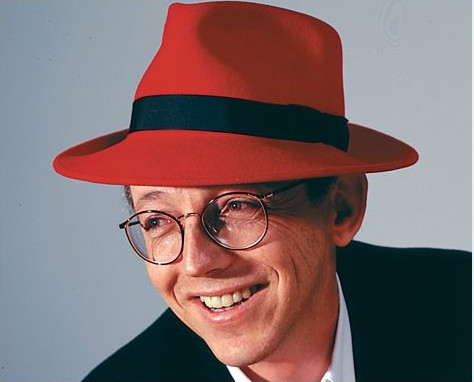
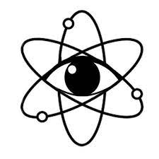
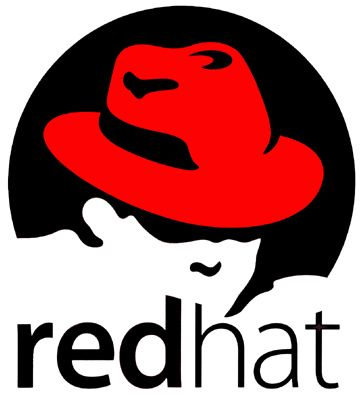

Este texto foi originalmente produzido pelos integrantes do grupo para fins de estudo e usado para a produção de trabalho escolar, portanto a profundidade é mínima em texto, confira a fonte de pesquisa para um estudo mais aprofundado.
O nome Red Hat foi dado devido ao fundador da empresa Marc Ewing usar um chapéu de lacrosse vermelho da Universidade Cornell. Esse chapéu tem um significado muito especial, pois foi dado por seu avó enquanto ainda cursava a Universidade Carnegie Mellon.

Durante a sua história a Red Hat fez diversas aquisições, foram cerca de 25 sendo que a primeira ocorreu em 1999. A aquisição em questão foi de ativos da Atomic Vision um estúdio de design para fazer melhorias no site da empresa redhat.com.

O icônico logo da Red Hat foi criado nos anos 2000 e continha a sombra de um homem com um chapéu vermelho. Apenas em 2018 o logo passou por uma atualização mantendo apenas o chapéu vermelho.

A Red Hat foi a primeira empresa de código fonte aberto a valer 1 bilhão de dólares, isso aconteceu em 2012 quando a empresa atingiu a marca de US $ 1,13 bilhão de receita anual.
Já em 2019 a Red Hat bateu a marca de 3,4 bilhões de dólares em receita total durante o período do ano fiscal.